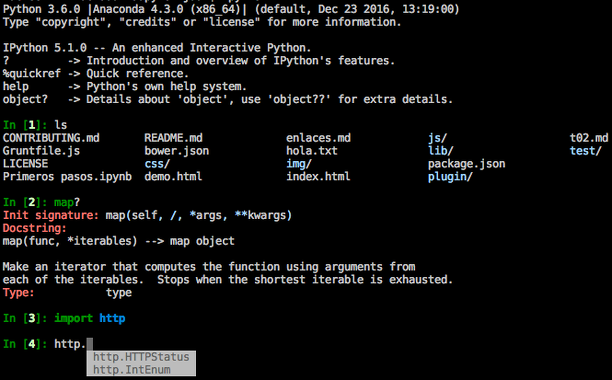

Introducción a
Jupyter
(Antes conocido como iPython Notebook)
Evolución histórica
- iPython
- iPython notebook
- Jupyter notebook (Language agnostic)
Jupyter ≊ Julia + Python + R
Y más...
- Ruby
- Haskell
- Node.js
- ... muchos más: Go, Scala, Octave, Bash, Rust ...
- Lista completa en https://github.com/jupyter/jupyter/wiki/Jupyter-kernels
Keywords: Jupyter kernel for [Tu
lenguaje favorito aquí]
¿Qué es iPython?
iPython es Python con superpoderes
Un interprete de Python ampliado
Puede hacer todo lo que un interprete normal, y más cosas:
- Comandos "mágicos"
- Coloreado de sintaxis
- Autocompletado de código
- Introspección
- Mejores ayudas, documentación
- debugging, etc...
Ejemplo de las capacidades de iPython
¿Cómo lo hace?
while True:
orden = espera_orden()
if orden.es_especial:
procesa_orden_interna(orden)
else:
salida = ejecuta_en_python(orden)
print(salida)
Comandos mágicos
- Son ordenes propias de iPython
- Siempre empiezan por
%o%%- % para ordenes que afecta una sola línea
- %% para ordenes que afectan a toda una celda
%lsmagices una orden mágica que lista todas las ordenes mágicas disponibles
¿Qué es un notebook?
Una definición
Una aplicación web, que permite ejecutar código a la vez que representar texto con formato, incluyendo imágenes, diagramas y ecuaciones matemáticas de forma integrada
¿Para qué sirve?
- Consola Python en web
- Realización de análisis y estudios
- Informes en vivo
- Panel de mando
Características de los notebooks
- fáciles de compartir
- repetibles
- verificables
- modificables
Un notebook se divide en celdas
notebook = Lista de celdas + metadatos
Hay varios tipos de celdas
- Celda de texto
- Celda de código
- Celda de resultados
Celda de texto
- Aceptan markdown, y Html, con lo que podemos darle formato a los textos muy facilmente
- Podemos incluir fórmulas matemáticas usando el formato de LaTex
Keywords: Latex
Markdown
Jupyter
Ejemplo de celda de texto
Celda de código
Descripcion de la celda de código
Ejemplo de celda de código
Celda de resultados
Ejemplos de celda de resultados
Compartir y convertir a otros formatos
El formato ipynb es el formato estandar para compartir
Es json sencillo. Su estructura es metadatos más lista de celdas.